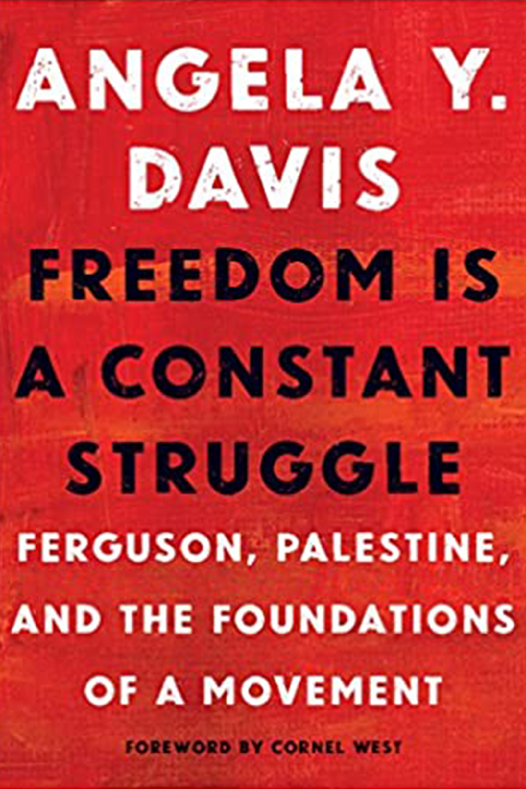

Books to read

Reflection on the importance of black feminism, intersectionality, and prison abolitionism for today's struggles.

Congressman John Lewis (GA-5) is an American icon and key figure of the civil rights movement.
His commitment to justice and nonviolence has taken him from an Alabama sharecropper's farm to the halls of Congress, from a segregated schoolroom to the 1963 March on Washington, and from receiving beatings from state troopers to receiving the Medal of Freedom from the first African-American president.

In 2008 the United States elected its first black president, and recent polls show that only twenty-two percent of white people in the United States believe that racism is a major societal problem.
On the surface, it may seem to be in decline. However, the evidence of discrimination persists throughout our society. Segregation and inequalities in education, housing, health care, and the job market continue to be the norm.
Post 9/11, increased insecurity and fear have led to an epidemic of the scapegoating and harassment of people of color.

In 2008 the United States elected its first black president, and recent polls show that only twenty-two percent of white people in the United States believe that racism is a major societal problem.
On the surface, it may seem to be in decline. However, the evidence of discrimination persists throughout our society. Segregation and inequalities in education, housing, health care, and the job market continue to be the norm. Post 9/11, increased insecurity and fear have led to an epidemic of the scapegoating and harassment of people of color.

Boy Snow Bird is set in the 1950s and follows a young pale-skinned, fine-boned girl (named Boy) who runs away from an abusive father in New York as soon as she turns 18. She makes it as far as a small town in Connecticut and starts a new life. Boy falls in love with a man who has a beautiful, blue-eyed, pale-skinned daughter Snow.
Snow looks just like Boy. Boy soon has a child with her husband, and the little girl is born with dark skin and African-American features. We learn that Boy has been "passing" and the town, which had taken in beautiful Boy, turns on her.
Oyeyemi's book has a beautiful fairy tale quality to it and her sentences are rich, lush, beautiful.

You pick up this book thinking it's about the titular brothers. And it is! But it's also about their families and their small hometown. After Jim and Bob Burgess leave their hometown in Maine for their comfortable lives in New York City, they watch the changes as Somali immigrants move to the town with a detached interest. But it's the family and friends they left behind, as well as the immigrant community, that has to find a way to share the town.
After Jim and Bob's nephew rips apart the tenuous peace in the small community, the Burgess Boys are pulled back to their hometown to address the tensions that hide right below the surface in their hometown and in their families.

In his critically acclaimed history Freedom Summer, award- winning author Bruce Watson presents powerful testimony about a crucial episode in the American civil rights movement.
During the sweltering summer of 1964, more than seven hundred American college students descended upon segregated, reactionary Mississippi to register black voters and educate black children.
On the night of their arrival, the worst fears of a race-torn nation were realized when three young men disappeared, thought to have been murdered by the Ku Klux Klan. Taking readers into the heart of these remarkable months, Freedom Summer shines new light on a critical moment of nascent change in America.

In the American Revolution, Virginians were the most eloquent spokesmen for freedom and quality.
George Washington led the Americans in battle against British oppression. Thomas Jefferson led them in declaring independence.
Virginians drafted not only the Declaration but also the Constitution and the Bill of Rights; they were elected to the presidency of the United States under that Constitution for thirty-two of the first thirty-six years of its existence.